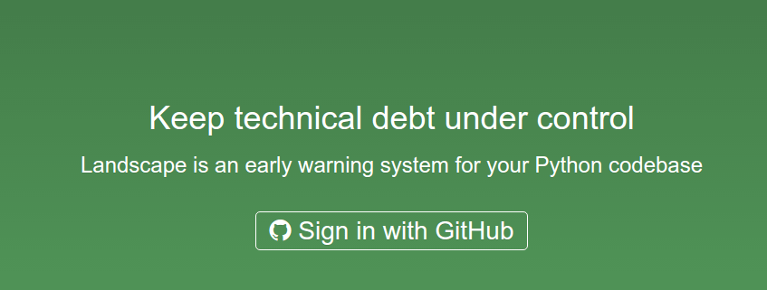

Fala pessoal, tudo bem?
Na terceira parte deste tutorial, aprendemos a usar o Coveralls para gerar relatórios de testes para o nosso projeto. A próxima ferramenta que iremos estudar será o serviço Landscape. Neste tutorial serei breve, já que o uso default da ferramenta é bem simples.
Sobre o Landscape
Landscape é uma ferramenta online semelhante ao já conhecido PyLint, ou seja, é um verificador de bugs, estilo e de qualidade de código para Python.
Quando ativamos a análise do Landscape em nosso repositório, ele é executado após cada push ou pull request e realiza uma varredura em nosso código fonte Python atrás de possíveis bugs, como por exemplo variáveis sendo usadas antes de serem declaradas, nomes reservados sendo usados como nomes de variáveis e etc. Ele também verifica se a formatação do seu código esta seguindo a PEP8 e aponta possíveis falhas de design em seu código.
Uma vez que a análise esteja finalizada, a ferramenta indica em porcentagem a "qualidade" do nosso código, ou em palavras mais precisas, o quanto nosso código está bem escrito segundo as boas práticas de desenvolvimento. Vale deixar claro que o Landscape não verifica se seu código funciona corretamente, isso é responsabilidade dos testes que você escreveu, como foi visto na primeira parte do tutorial.
Semelhante as ferramentas dos tutoriais anteriores, o Landscape é totalmente gratuito para projetos opensource.
Criando uma conta
O processo de inscrição é simples. No topo da página temos a permissão de nos inscrevermos usando a conta do Github. Realize a inscrição e vamos as configurações.

Ativando o serviço
De todas as ferramentas apresentadas, esta é a mais simples de configurar. O único passo necessário aqui é ativar o serviço para o nosso repositório. Como exemplo, estarei usando o mesmo repositório dos últimos tutoriais. Clique aqui para visualizar o repositório.
Assim que realizar o cadastro, vamos nos deparar com uma tela contendo a listagem dos nosso repositórios que estão utilizando o serviço. Se você nunca usou o serviço provavelmente não terá nenhum repositório, então faça o seguinte: clique no botão Sync with Github now, para realizar a sincronização com a sua conta do Github. Assim que a sincronização estiver completa, clique no botão Add repository.
Ao clicar, seremos levados a uma tela com a listagem de todos os repositórios que temos permissão de escrita. Procure o repositório que deseja ativar o serviço (lembrando que o Landscape funciona apenas para projetos Python) e o selecione (basta clicar sobre o nome do repositório).
Adicione o repositório clicando no botão verde Add Repository, logo abaixo da lista. Seremos novamente redirecionados a tela inicial, agora com o repositório escolhido já visível.
Inclusive, a partir desse momento, o Coveralls já irá iniciar a análise do seu projeto. Clique no nome do repositório para ver mais detalhes da analise.
No caso do meu projeto de teste, temos que a "saúde" do código está em 100%, ou seja, nenhuma parte do código apresenta erros de estilo, bugs e está utilizando boas práticas de programação em todo seu escopo.
Na barra lateral localizada à esquerda da página, temos alguns items, entre os quais os mais importantes são descritos a seguir:
Error: são instruções no código que provavelmente indicam um erro. Por exemplo, quando referenciamos uma variável sem declará-la antes ou realizamos a chamada de algum método inexistente.Smells: são sinais ou sintomas no código que possivelmente indicam uma falha no projeto do software. Diferentemente de um bug, code smells não indicam uso incorreto da linguagem de programação e nem impedem o software de funcionar. Ao invés disso, eles indicam falhas no design do projeto que podem atrasar seu desenvolvimento ou mesmo ser a porta de entrada para bugs no futuro. Exemplos de code smells são: métodos ou códigos duplicados, classes muito grandes, uso forçado de algum design pattern quando o mesmo poderia ser substituído por um código mais simples e fácil de manter, métodos muito longos ou com excessivo números de parâmetros e por aí vai. A lista pode crescer muito haha... para mais detalhes leia.Style: como o nome sugere, este item exibe os erros de estilo em seu código indicando trechos de código que não estão seguindo as regras de estilo daPEP8, trechos de códigos com identação incorreta e etc.
Como último passo, agora somente nos resta adicionar uma badge no arquivo README.md em nosso repositório. Assim poderemos ver a porcentagem de "saúde" do nosso projeto sem precisar acessar a página do Landscape.
Na página com o resultado da análise (onde é exibido a porcentagem de "saúde" do seu projeto), podemos pegar a badge do Landscape. No canto superior direito da tela, você encontra os botões abaixo:
Clique na badge (onde está escrito health) e a seguinte janela será exibida:
Selecione o texto da opção Markdown e cole-o no README.md do seu repositório. O meu README.md ficou assim:
# Codigo Avulso Test Tutorial
[](https://travis-ci.org/mstuttgart/codigo-avulso-test-tutorial)
[](https://coveralls.io/github/mstuttgart/codigo-avulso-test-tutorial?branch=master)
[](https://landscape.io/github/mstuttgart/codigo-avulso-test-tutorial/master)
Também é possível configurar o Landscape para que o mesmo exclua algum diretório/arquivo da análise (muito útil com arquivos de interface compilados, usando por quem trabalha com PyQt/PySide) entre outras opções, mas isso fica para um tutorial futuro.
Abaixo podemos ver as três badges que adicionamos em nosso projeto. Clique aqui para acessar o repositório.
Conclusão
Pronto pessoal, agora temos o nosso repositório exibindo informações sobre os testes unitários, relatórios de testes e analises de qualidade de código. Isso não garante que seu projeto seja livre de falhas e bugs, mas te ajuda a evitá-los.
Vale lembrar que todas essas ferramentas ajudam muito, mas nada substitui o senso crítico e o hábito de sempre usar boas práticas durante o desenvolvimento. Por isso sempre busque aprender mais, estudar mais, ser humilde e ouvir quem tem mais experiência que você. Enfim, ser um programador e uma pessoa melhor a cada dia. Fica o conselho para todos nós, incluindo para este que vos escreve.
Espero que tenham gostado desta série de tutoriais. Obrigado por ler até aqui e até o próximo post.